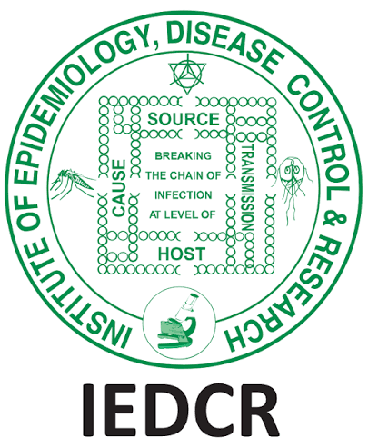

Overview
Institutional delivery remains low in many rural communities in Bangladesh, contributing to preventable maternal and neonatal complications. This project set out to find the determinants and factors that affect low participation in institutional childbirth.
Approach
The project was conducted in conveniently chosen 8 sub-districts across 7 districts. 384 mothers of all ages who had childbirth in 2022 formed the study population, and data were interpreted to identify patterns associated with institutional versus non-institutional delivery.
Findings
Institutional delivery was observed in nearly two-thirds of the cases, with a significantly high rate of cesarean section in almost one in every three pregnancies. Higher institutional delivery practice was observed among mothers who completed antenatal care, were served by highly trained caregivers, lived close to a hospital, and had good transportation facilities.
Status
A report has been prepared based on data interpretation and is being readied for submission and publication.